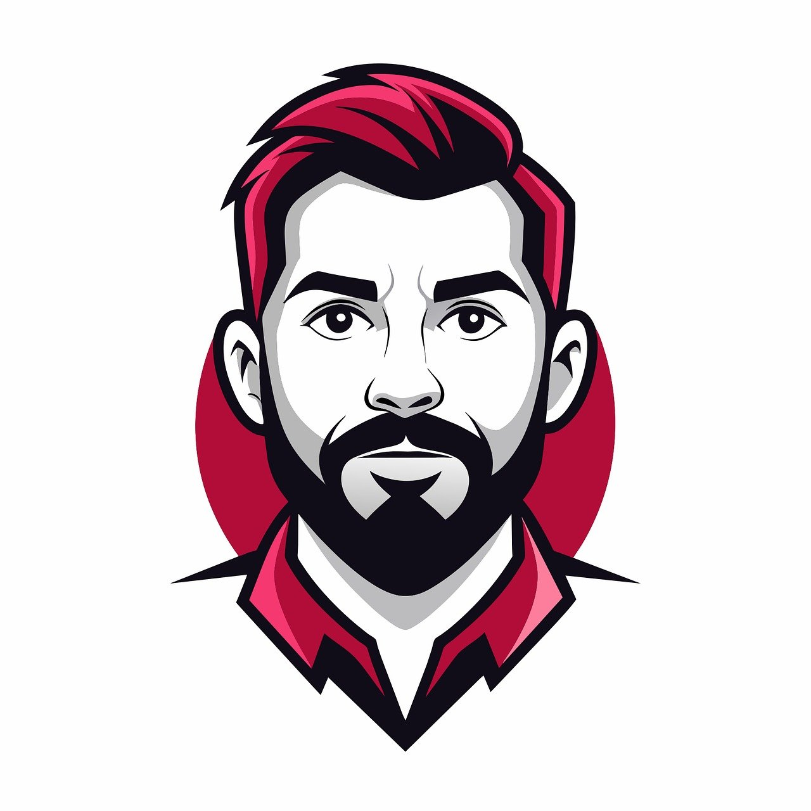

Hi, I'm Miguel Prieto! 
I am a game developer with 2 years of experience in both gameplay programming and user interface design. I have worked on cross-platform games and real-time systems using Unity and Unreal Engine. I am an avid user of game development toolkits and services, and have integrated features such as AI behavior trees, physics-based mechanics, and multiplayer networking. My recent work includes leveraging Unity ML-Agents for training non-player characters and implementing in-game analytics to improve player engagement.